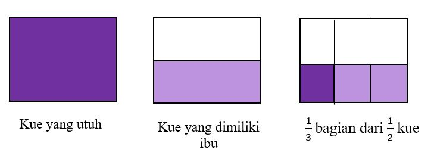

Misalkan ibu mempunyai kue amparan tatak \[\frac{1}{2}\] bagian. \[\frac{1}{3}\] bagiannya diberikan kepada kakak. jika bagian kue amparan tatak yang diberikan kepada kakak dibandingkan dengan sebuah kue amparan tatak yang utuh, berapa bagiankah yang diberikan kepada kakak? Perhatikan gambar di bawah ini.

Dari gambar di atas terlihat bahwa taman yang ditanami kembang dibandingkan dengan taman keseluruhan adalah \[\frac{1}{6}\] bagian.
Sehingga, \[\frac{1}{3}\] dari \[\frac{1}{2}\] adalah \[\frac{1}{6}\], atau \[\frac{1}{3} \times \frac{1}{2} \]=\[\frac{1 \times 1}{3 \times 2}\]=\[\frac{1}{6}\]
Kesimpulan
Misalkan diketahui Pecahan \[\frac{a}{b}\] dan \[\frac{a}{b}\] dengan b ≠ 0 dan d ≠ 0, maka \[\frac{a}{b} \times \frac{c}{d} = \frac{a \times c}{b \times d}\]
Dari kesimpulan tersebut diperoleh :
Untuk b = 1 diperoleh \[\frac{a}{1}\times \frac{c}{d} = \frac{a\times c}{b\times d} \Leftrightarrow a\times \frac{c}{d} = \frac{a\times c}{d}\]
Untuk Perkalian desimal dapat dilakukan dengan cara berikut: Contoh:
Pada operasi hitung Bilangan bulat, diketahui bahwa Pembagian merupakan operasi kebalikan dari Perkalian. Bagaimana operasi Pembagian pada Bilangan Pecahan?. Perhatikan Perkalian Bilangan bulat dengan Pecahan berikut.
2 dari 2
ibu mempunyai satu buah kue bingka kemudian di berikan \[\frac{1}{5}\] kepada andi dan 10% dari sisa kue diberikan kepada siti. berapa sisa kue yang dimiliki ibu?
penyelesaian:
1 dari 2
tentukan hasil penjumlahan dan pengurangan berikut.
note: semua jawaban memakai pecahan biasa
petunjuk: klik tombol buat untuk mengganti soal dan klik tombol cek untuk memeriksa jawaban
=
2 dari 2
Pak budi mempunyai satu bidang tanah. Sepertiga dari luas tanahnya digunakan untuk bangunan, 25% nya untuk kolam ikan papuyu, dan sisanya untuk kebun ramania. Berapa bagian tanah yang digunakan untuk kebun buah ramania?.